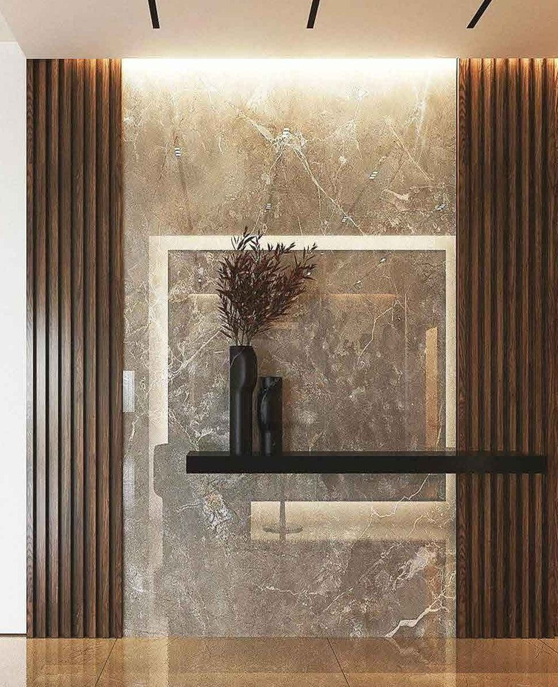
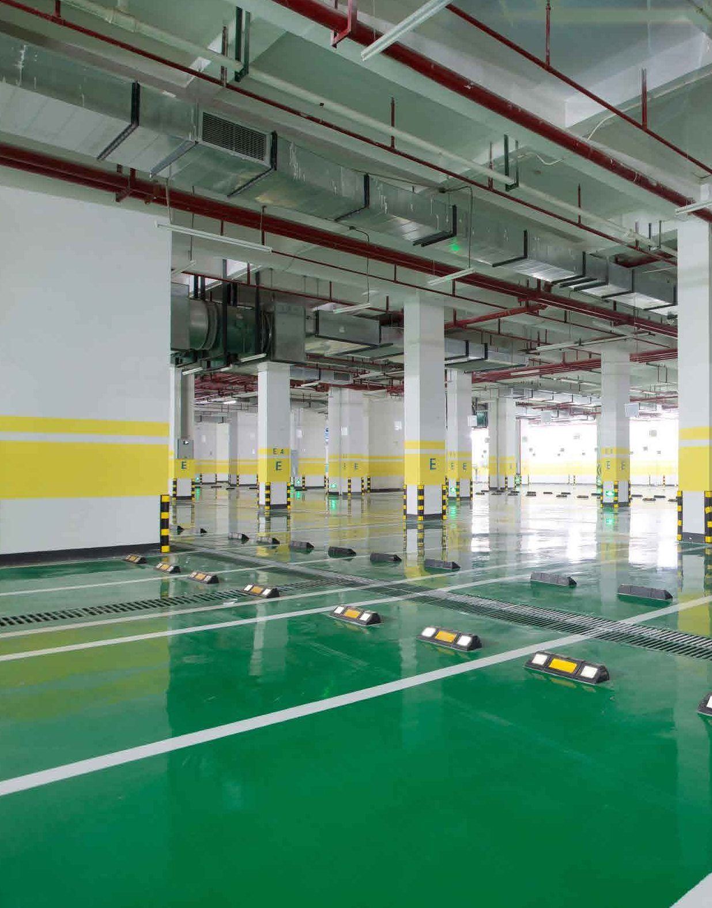

A mistake at the start
Can lead to problems that affect the building's safety and raise repair costs.
Every service page is assembled from these blocks: the five common components in this order (hero → service component → gallery → related services → CTA), plus the one service component that belongs to that service. Every service component ends in its own call to action. Shown with real copy from content.md; switch to Arabic with the ع button.
Any mistake at the start of construction can lead to problems that affect the building's safety and raise repair costs. That is why, at Creativity Touches for Contracting, we offer general contracting with care at every stage of execution, so you start your project on sound foundations and reduce the risk of future mistakes.

Explore examples of our decoration and outdoor work, and the details that give every place its own character.



Share its details and let us discuss the best next step to build it.
At Creativity Touches for Contracting we offer a range of services suited to your project, with care for execution quality, compliance with specifications and occupational safety — to help you reduce costly mistakes, protect the value of your investment and reach the results you expect with confidence.
01Building work carried out with quality and commitment at every stage.
 02
02Practical solutions that add efficiency to spaces and suit how they are used.
03Outdoor spaces that combine visual comfort with practical order.
04Elegant interior details that give a place a balanced, distinctive character.
Discover our services, and see the strengths of each one and how it meets your project's needs.
Start exploringCan lead to problems that affect the building's safety and raise repair costs.
So you start your project on sound foundations and reduce the risk of future mistakes.
Share its details and let us discuss the best next step to build it.
Explore the industrial buildings and facilities, and the kind of work shown in the company profile.



Share your project requirements and let us understand its needs and the right services to deliver it.
See examples of our road and asphalt work, and the attention to detail that makes the difference in quality.

Share your requirements and we will help you deliver them.
Specialised solutions that suit how the space is used, combining durability, easy maintenance and a quality finish.
Tell us how your space is used, and we will help you choose the right floor for your project.
The wrong treatment can hide the signs of damage for a while, without treating the problem itself.
We start from the nature of the damage, not its appearance.
Repair materials are selected to match the damage.
Helping concrete elements regain their performance and reducing repeat repairs.
Tell us about the concrete’s condition, and let us help you choose the treatment that suits the damage.
The experience that brings players back starts with a floor that gives them comfort and stability as they move.

Let us help you create a space that gives players an experience worth repeating.
Beauty alone is not enough if a place isn’t comfortable and suited to how it is used.
Share your vision for the place, and let us help turn it into a space that expresses you.